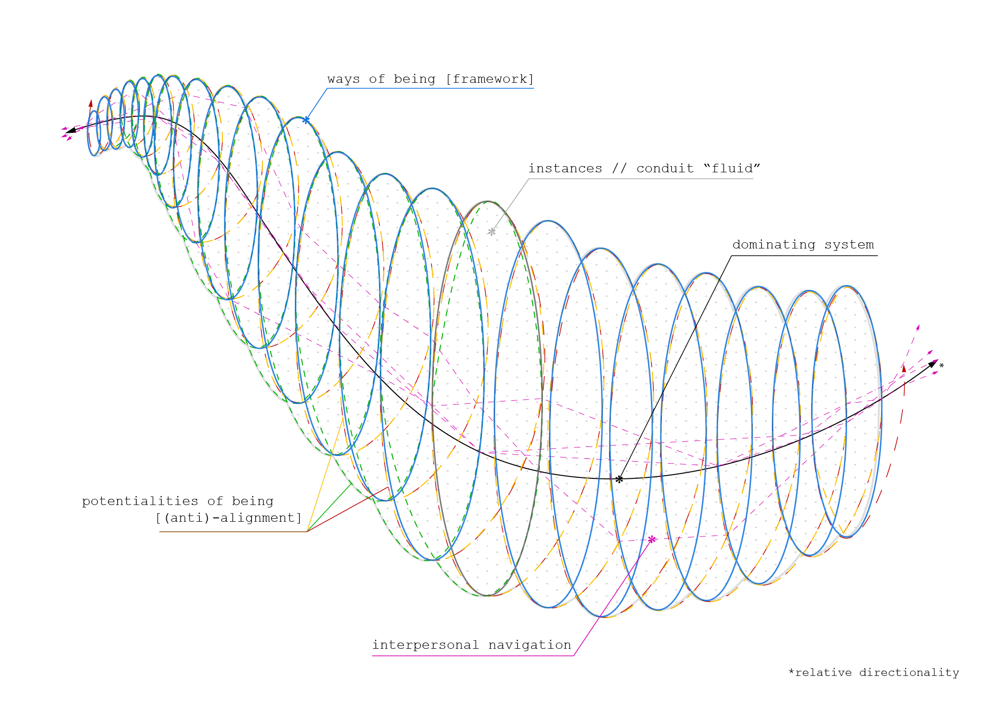
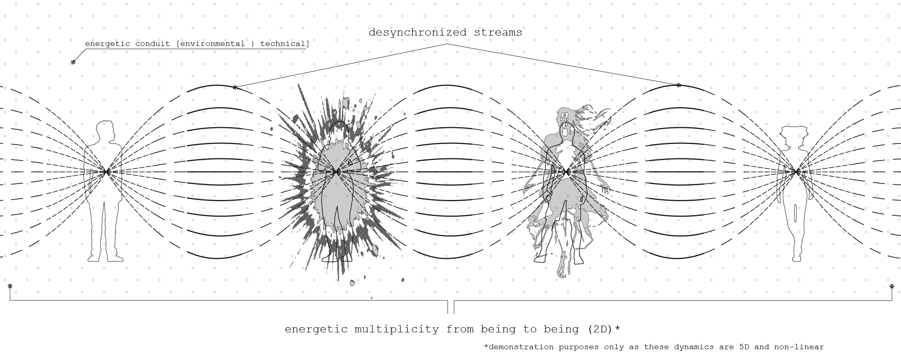

Oree's Borees © 2026 is licensed under CC BY-NC-SA 4.0


I made this short video and two correlating diagrams as a two in one work submission for the Understanding Microclimates and Revenge of Reason seminars. This brief reflection was made to make it all make sense.
During the Revenge of Reason Seminar led by Pete Wolfendale, I experienced the death and re-conceptualization of myself. This uncontrollable and unexpected re-definition ebbed and flowed “me” across different waters of emotional potential often inciting confusion, gratitude, curiosity, and more often than not, fear. This seminar in conjunction with Understanding Microclimates (Will Scarlett) and Philosopher’s Diagram (Thomas Mical) were essential external forces for establishing the essence, being and culmination of “myself”. Though I still lack the capacity to discuss the class within its classical constructs [an act that, in ways, requires dis-association and the knowledge of words, concepts and theory that I am, with humility, not familiar enough with], it has irreversibly re-developed any former structures of what “me”, “you”, “they” and “we” constitutes into being frameworks for making tangible this scale-able enforcer (actor) of complex dynamic action within space. [ I stand still, you fall backwards, we are bounding ahead.]
The week I focused on [week 6 - personhood and problems] was ground zero for me practically applying human capacity, including but not limited to: personality, creed, ambition, avarice; etc. as an influence(ed)-able energetic mechanism. This examination forced me to comprehend that “I” is, in fact, not a singularity and instead a kaleidoscopic amalgamation of concept and experience. For my final work, I chose to produce a video that tersely synthesizes observations gathered when practicing the dérive during this time of death and renewal. The camera augments experience due to the fact it lacks the sensorial aspect of depth, that quality that causes our senses to speak loudly to us when looking over the edge of a high fall. Transmuting that absence into something fruitful requires learning how to see through a different lens literally in order to evoke some different essence that I have yet to figure out a name for. This video is trying to tap in and define what that depth transmutation can be.


Oree's Borees © 2026 is licensed under CC BY-NC-SA 4.0